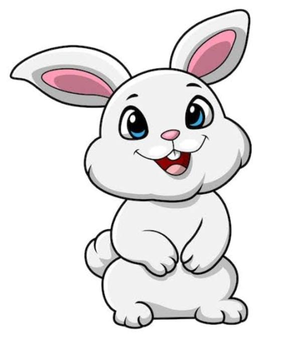
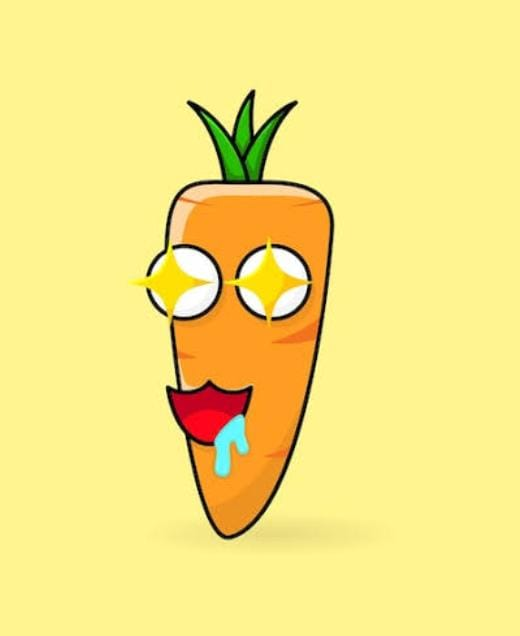
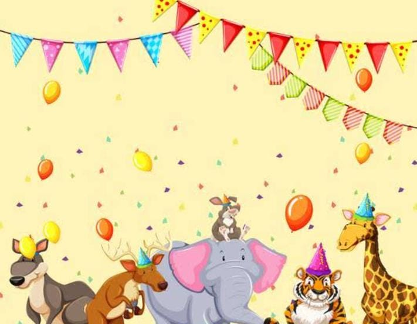

Era uma vez um coelho chamado Nino, conhecido por ser curioso e sempre acabar em situações engraçadas. Um dia, ele encontrou uma floresta cheia de cogumelos brilhantes. No centro da floresta, havia dois caminhos: um vermelho e um azul.

No meio do caminho uma enorme cenoura mágica, brilhante como o sol! A cenoura diz: "Se você me comer, poderá saltar até as estrelas!". Nino fica animado, mas antes de dar a primeira mordida, ele sente o chão tremer e um som ficar mais alto

Ele segue o som de música e encontra uma festa de animais dançantes. No centro da festa há um pato DJ que acena para ele e pergunta "quer ser o dj da festa?